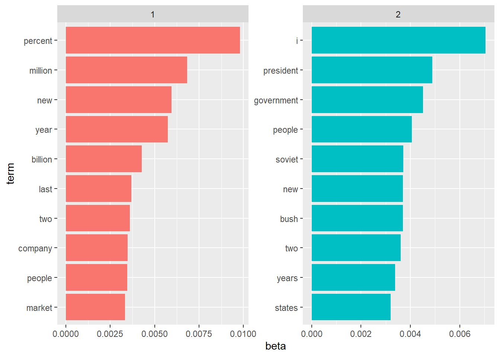

Chapter 8 Topic modeling
Topic modeling is a type of statistical modeling for discovering the abstract “topics” that occur in a collection of documents.
8.1 Latent Dirichlet allocation
Latent Dirichlet allocation (LDA) is an example of topic model and is used to classify text in a document to a particular topic. It treats each document as a mixture of topics, and each topic as a mixture of words. LDA is a mathematical method for finding the mixture of words associated with each topic and the mixture of topics that describes each document.
Here is an example of applying LDA model with 2 topics as parameter:
## <<DocumentTermMatrix (documents: 2246, terms: 10473)>>
## Non-/sparse entries: 302031/23220327
## Sparsity : 99%
## Maximal term length: 18
## Weighting : term frequency (tf)# fitting LDA model with 2 topics
ap_lda = LDA(AssociatedPress, k=2, control = list(seed = 1234))
ap_lda## A LDA_VEM topic model with 2 topics.Now we can extract the per-topic-per-word probabilities from the model
## # A tibble: 20,946 x 3
## topic term beta
## <int> <chr> <dbl>
## 1 1 aaron 1.69e-12
## 2 2 aaron 3.90e- 5
## 3 1 abandon 2.65e- 5
## 4 2 abandon 3.99e- 5
## 5 1 abandoned 1.39e- 4
## 6 2 abandoned 5.88e- 5
## 7 1 abandoning 2.45e-33
## 8 2 abandoning 2.34e- 5
## 9 1 abbott 2.13e- 6
## 10 2 abbott 2.97e- 5
## # ... with 20,936 more rowsThe resulting dataframe present the probability of each term to be generated from the different topics. For example the term “abandoned” has a probability of \(1.39 \times 10^{-4}\) of beng generated from topic 1 and a probability of\(5.88 \times 10^{-5}\) for being generated from topic 2.
Let’s find the 10 terms that are most common within each topic.
library(ggplot2)
library(dplyr)
ap_top_terms <- ap_topics %>%
group_by(topic) %>%
top_n(10, beta) %>%
ungroup() %>%
arrange(topic, -beta)
ap_top_terms %>%
mutate(term = reorder_within(term, beta, topic)) %>%
ggplot(aes(term, beta, fill = factor(topic))) +
geom_col(show.legend = FALSE) +
facet_wrap(~ topic, scales = "free") +
coord_flip() +
scale_x_reordered()
We can interpret the result as a first topic related to finanial news (“precent’,”million“,”company“) and a second topic related to political news (”president“,”government“,”states").
8.2 Document-topic probabilities
Besides estimating each topic as a mixture of words, LDA also models each document as a mixture of topics. For examining per-document-per-topic probabilities, we use the “gamma” metric.
## # A tibble: 4,492 x 3
## document topic gamma
## <int> <int> <dbl>
## 1 1 1 0.248
## 2 2 1 0.362
## 3 3 1 0.527
## 4 4 1 0.357
## 5 5 1 0.181
## 6 6 1 0.000588
## 7 7 1 0.773
## 8 8 1 0.00445
## 9 9 1 0.967
## 10 10 1 0.147
## # ... with 4,482 more rowsEach of these values is an estimated proportion of words from that document that are generated from that topic. For example, the model estimates that only about 25% of the words in document 1 were generated from topic 1.